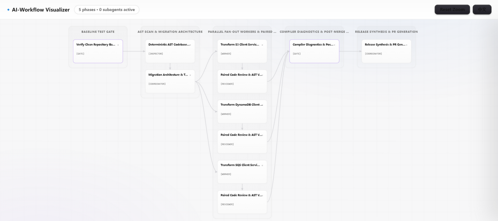

Code, Not Conversation.
Compiling Intent into Code.
Chatbots wander; dynamic workflows guarantee termination, verified gates, and zero-token replay. Built on AWS Kiro native primitives.
Interactive Engine Showcase
Interactive 9-Act Runtime Studio
Switch tabs below to inspect terminal output captured verbatim from a real bash scripts/demo.sh run (2026-11-21, offline mock engine, zero live API spend) — every line is committed demo evidence.
# Act 1 — Strict Compiler & Phase Graph (captured: bash scripts/demo.sh)
$ bash scripts/demo.sh
✔ facade script compiled clean (35 sites)
Phases:
• Detection & Telemetry Probing
• Triage & Root Cause Analysis
• Remediation Synthesis & Safety Pair Review
• Execution & Verification Gate
• Post-Mortem Synthesis & Dashboard Export
# Act 2 — DevOps Incident Triage & Automated Remediation (captured)
$ bash scripts/demo.sh # == 2/9 run: incident triage & remediation (mock) ==
✔ run dwfrun-mwq4fnwo-1b5a79 completed in 2.03s
result: {"tripped":true,"incidentId":"INC-20261031-01","severity":"P1",
"rootCause":"Connection pool exhaustion under burst traffic; idle connections not pruned.",
"safetyRisk":"LOW","gates":"passed","record":"SUCCESS"}
# Act 3 — Zero-Token Replay (captured)
$ bash scripts/demo.sh # == 3/9 resume: the SAME run replays at ZERO provider calls ==
⚡ replayed from journal: worldread#2#1 (0 provider calls)
⚡ replayed from journal: worldread#3#1 (0 provider calls)
⚡ replayed from journal: ask#9#1 (0 provider calls)
⚡ replayed from journal: ask#14#1 (0 provider calls)
[act 3] OK zero-provider replay
# Act 4 — Multi-Agent AWS SDK v2 → v3 Migration (captured)
$ bash scripts/demo.sh # == 4/9 run: AWS SDK v2->v3 migration (mock) ==
asks: 8 (replayed from journal: 0)
result: {"migrated":3,"targetPackage":"@aws-sdk/client-s3","allApproved":true,"gates":"passed","record":"SUCCESS"}
Every migrated file passes an independent reviewer before the tsc/npm-test merge gate.
# Act 5 — Amend Lineage: reuse ♻ vs diverge ⑂ (captured)
$ bash scripts/demo.sh # == 5/9 amend: edit the script, fork ==
♻ amended run reused: ask#2#1 (0 provider calls)
⑂ amended run diverged: ask#5 (executing live)
asks: 1 (replayed from journal: 0)
[act 5] OK amend lineage (reuse + diverge)
# Act 6 — Hole Parking, Code Fill & Amend Continue (captured)
$ bash scripts/demo.sh # == 6/9 holes: the run parks, fill it with code ==
⏸ run dwfrun-mwq4fyn8-7d25bf parked at hole "plan-remediation" in 10.64s
♻ amended run reused: ask#2#1 (0 provider calls)
✔ hole "plan-remediation" filled; forked run dwfrun-mwq4g84h-1cbf91 completed in 0.84s
[act 6] OK hole park + fill + amend continue
# Act 7 — Human Escalation: park, answer, resume at zero cost (captured)
$ bash scripts/demo.sh # == 7/9 escalation ==
question (dwfq-df240406): Service is HEALTHY. Approve auto-remediation? (yes/no + reason)
⚡ replayed from journal: ask#2#1 (0 provider calls)
⚡ replayed from journal: escalate#4#1 (0 provider calls)
✔ run dwfrun-mwq4g9li-2cf3ca completed with the answer in hand
[act 7] OK escalation park + answer resume
# Act 8 — Budget Hard Stop: strict spend cap (captured)
$ bash scripts/demo.sh # == 8/9 budget: budget.total hard-stops further agent() calls ==
✖ ask#5: Workflow token budget exceeded (88 / 80 output tokens). Stopping further agent() calls.
⚠ In-flight agents will complete; their results are preserved.
result: {"first":"HEALTHY","stopped":"WorkflowBudgetExceededError"}
[act 8] OK budget hard stop
# Act 9 — Journal-Rendered Report & Live Attach (captured)
$ bash scripts/demo.sh # == 9/9 view + live attach ==
Run view written: .workflow/views/demo.html
Static report: .workflow/views/demo.html # every node, timing and journal event, standalone page
$ node bin/workflow.js serve dwfrun-mwq4fnwo-1b5a79 --db .workflow/demo-dwf.sqlite
ALL NINE ACTS COMPLETE — every capability evidenced above.
Architectural Rigor
The 4 Conversational Failure Modes Solved
Why raw conversational agent loops fail in production, and how our compiled state machines mechanically eliminate them.
Agentic Laziness — the model skips work
Left alone, a conversational agent samples the easy 20% of a job and declares victory — the migration never scans every file.
Self-Preferential Bias — the author grades its own work
An agent that writes a transform and then reviews it will approve its own bugs — grading and authorship must be separated.
Cost Drift — iterating re-bills everything
Crash at 95% progress, or tweak one step of a 50-step workflow, and a conversational loop re-bills the entire history.
Goal Drift — the plan erodes with context compaction
In a long conversation, compaction quietly rewrites the mission: early requirements decay, later steps contradict earlier ones.
Production Verification
The Two End-to-End Applications
Complete enterprise automation scenarios verified by automated regression test suites.
DevOps Incident Triage & Automated Remediation
When a P1 database exhaustion alert triggers, the workflow inspects metrics, identifies the offending commit, runs remediation tools, and verifies pool stabilization through strict TAP gates.
- ✔ Demo-scenario MTTR: 12 s, journalled (synthetic P1 alert → gated recovery)
- ✔ Full audit trail recorded in SQLite state engine
- ✔ Zero hallucination gate verification

Multi-Agent AWS SDK v2 → v3 Migration
Scans large enterprise codebases, decomposes SDK usage via AST, parallelizes code transformation across fanout worker agents, and generates verified Pull Requests.
- ✔ 11 deprecated v2 call sites migrated across 3 files (journalled scan)
- ✔ TypeScript compiler & unit test pass mandatory
- ✔ Full git rollback support upon gate failure

Native Alignment
Kiro Native Governance Subsystems
Deep structural integration with AWS Kiro configuration and verification mechanisms.
Engine Behavior Specs
Markdown + JSON specs (workflow-engine-spec, typed-rpc-schemas, state-replay-invariants) anchoring engine behavior to Kiro's spec surface.
Pre-Execution Gates
Hard interceptors blocking unauthorized tool actions, credential leakage, or budget overruns.
Steering Directives
Deterministic rules guiding fallback routes, retries, and human escalation triggers.
MCP Federation
Model Context Protocol connector registry providing sandboxed tool calling with schema validation.
Property-Based Testing
18 fast-check invariants verifying DAG acyclicity, idempotent replay, and redactText security.
Skeleton Crew Roster
Team manifest and permission caps (team.json, permissions.json) — the minimal-crew operating model with hard tool ceilings.
Performance & Overhead
Bilateral Cross-Engine Benchmarks
Measured against the official ZCode dynamic-workflow engine — the identical facade mission script on the same scripted fake model (full table: SUBMISSION § Cross-engine benchmark).
Measured warm facade-script compile time (official engine on the same script: 51.1 ms).
Peak heapUsed in the bilateral benchmark (official engine: 100.2 MB; peak RSS 147.7 vs 235.9 MB).
npm audit --omit=dev → 0. Runtime deps pinned: zod, commander, typescript, @modelcontextprotocol/sdk.